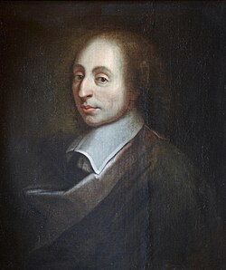

1623-1662
Blaise Pascal

Portrait: unknown; a copy of the painting of François II Quesnel, which was made for Gérard Edelinck en 1691[réf. nécessaire]., Public domain, Wikimedia Commons.
Events (6)
- 300 BCEPingala: combinatorics of poetic metres
popularizer · Combinatorics
- 1000Al-Karaji: binomial coefficients and early induction
systematiser · Algebra
- 1050Binomial coefficient triangle in China
popularizer · Combinatorics
- 1639Desargues' projective geometry
developer · Geometry
- 1657Probability from games of chance
developer · Probability
- 1665Pascal's arithmetical triangle
systematiser · Probability